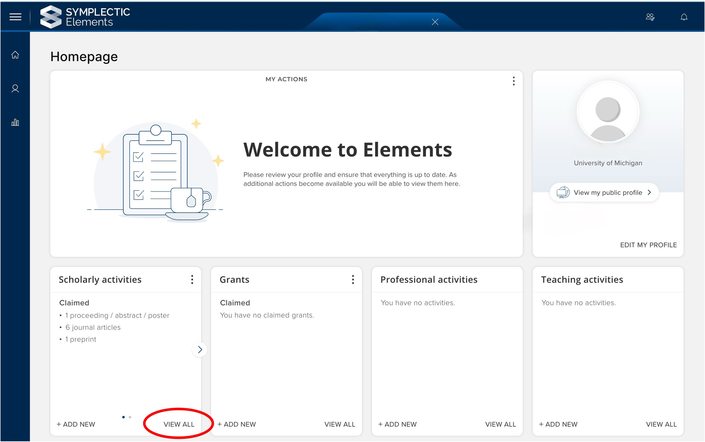
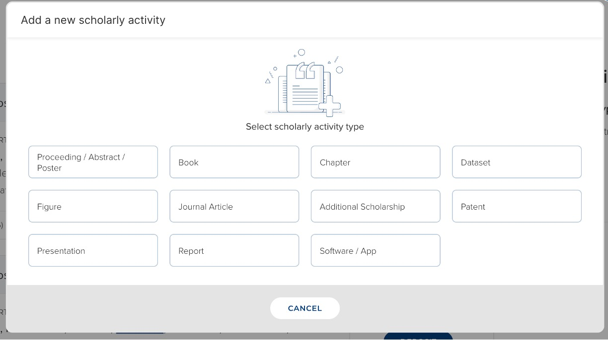
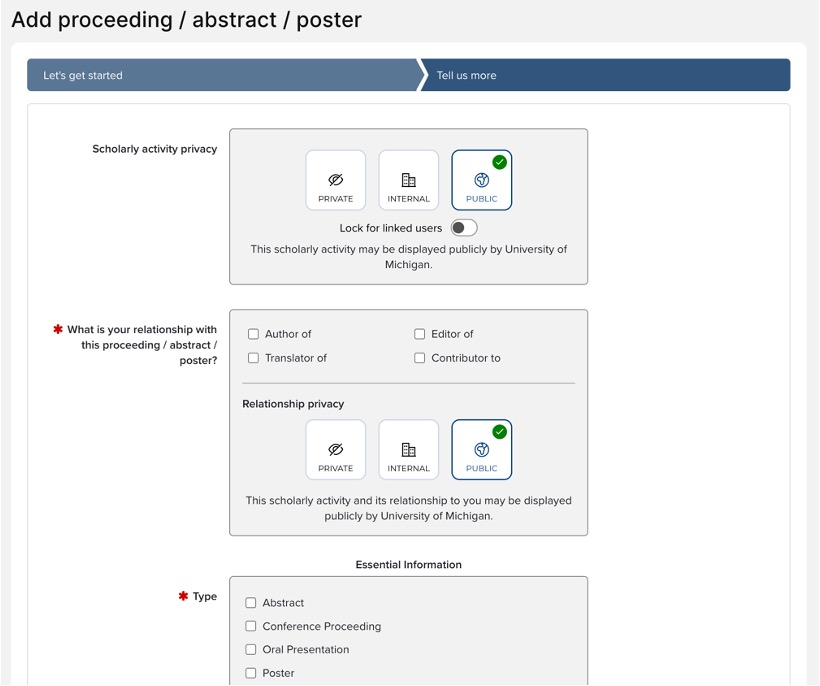
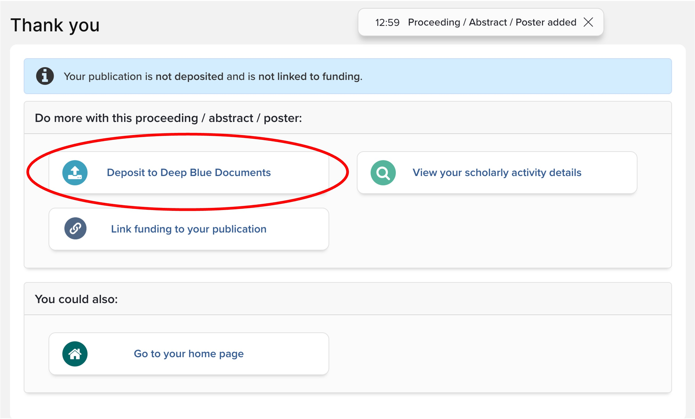

How to Deposit Works into Deep Blue Documents via Michigan Experts
Michigan Experts is U-M’s researcher profiling system. Among other things, you can showcase your research outputs in your profile. Deep Blue Documents is integrated into Michigan Experts, allowing you to add a Work to your Experts Profile and deposit it into Deep Blue Documents simultaneously.
Here’s how to deposit Works into Deep Blue Documents via Michigan Experts:
Here’s how to deposit Works into Deep Blue Documents via Michigan Experts:
- Log into Michigan Experts. Note: the software underlying Michigan Experts is called Symplectic Elements. After logging in, the Michigan Experts branding will be replaced with the Symplectic Elements branding.
- In the Scholarly Activities tile, select ‘View All.’ 
- On the ‘My claimed scholarly activities’ page, determine if the Work that you want to deposit into Deep Blue Documents is already listed.
- If it is listed, proceed to step 4.
- If not, skip to step 8.
- If the Work that you want to deposit into Deep Blue Documents is already listed, click the blue ‘Deposit’ button next to the Works name.
- A Work won’t have this button if it’s already deposited into Deep Blue Documents - see the Work’s History tab for more information.
- If applicable, select which version of the Work you’d like to deposit. You may see two options: choose an external source or choose a file from your local machine.
- Selecting either option is fine. It won’t affect how the Work is deposited into Deep Blue Documents.
- Select the version via the dropdown list. Then click ‘Use this File.’
- Optional: Select an embargo period. This is the length of time before the Work becomes publicly available in Deep Blue Documents.
- If your Work was published in a scholarly journal, check Jisc’s Open Policy Finder to determine if the journal publisher requires an embargo period.
- You can include a note in the Comments section about the chosen embargo period but it’s not necessary.
- Click Deposit. It may take a few minutes for the Work to be deposited so don’t refresh or hit the Back button.
- If the Work that you want to deposit isn’t listed, you can enter it manually. Click the blue + icon in the upper right corner.
- Select the type of scholarly activity that you’d like to deposit. Notice that there are many different types of scholarly activities that you can add! 
- Then fill in the metadata about the scholarly activity. The screenshot below is to add a conference proceeding, abstract, or poster. Metadata requirements will vary slightly by the type of scholarly activity selected. 
- Next, click ‘Deposit to Deep Blue Documents’ and follow steps 5-7 above. 
- After a successful deposit, you will receive an email with the subject: “Deep Blue: Submission Approved and Archived”
- If you click the DOI in this email, you’ll be taken to your Work in Deep Blue Documents. Note that the DOI may take a few hours to become active.
If you have any other questions, please Contact Us.